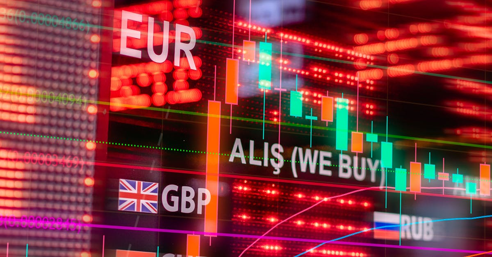

Le Détroit d'Ormuz : Un Carrefour Énergétique sous Haute Tension
Le détroit d'Ormuz, cette artère maritime étroite longue d'environ 167 kilomètres, est depuis des décennies un point névralgique de l'économie mondiale. Représentant un passage quasi obligatoire pour une part significative du pétrole brut et du gaz naturel liquéfié (GNL) transités par voie maritime, sa stabilité est directement corrélée à celle des marchés énergétiques et, par extension, à la santé de l'économie globale. Imaginez un goulot d'étranglement où transitent chaque jour des millions de barils, le tout sous le regard vigilant de plusieurs puissances militaires. C'est précisément le scénario qui s'est intensifié au début du mois d'avril, suite aux déclarations du président américain de l'époque, Donald Trump. Sa vision était claire, presque provocatrice : « Avec un peu plus de temps, nous pouvons facilement OUVRIR LE DÉTROIT D'ORMUZ, PRENDRE LE PÉTROLE, ET FAIRE UNE FORTUNE ». Cette rhétorique, loin d'être une simple boutade, reflétait une stratégie potentielle visant à exercer une pression maximale sur les acteurs régionaux, tout en signalant une volonté d'intervention directe. La crise qui s'est développée autour de ce point stratégique n'est pas nouvelle, mais elle a pris une tournure particulièrement critique, menaçant de perturber durablement l'approvisionnement énergétique mondial. La fragilité de cette situation, où une simple étincelle peut embraser la région, rend ce théâtre géopolitique particulièrement sensible aux fluctuations des marchés financiers. Les cours du pétrole, le moral des investisseurs, et la valeur des devises sont intrinsèquement liés à la perception du risque dans cette zone. Comprendre ces dynamiques est donc fondamental pour tout acteur des marchés financiers, y compris ceux qui privilégient une approche plus technique et automatisée du trading.
👉 À lire : Guerre en Ukraine: Impacts sur le Forex et l'Energie

L'Impact Immédiat sur les Marchés Énergétiques Mondiaux
La simple mention d'un possible blocage ou d'une escalade des tensions dans le détroit d'Ormuz suffit à provoquer des secousses significatives sur les marchés énergétiques. Au début d'avril, alors que les perturbations se multipliaient autour de ce passage crucial, les prix du pétrole brut ont réagi avec la volatilité attendue. Le Brent et le WTI, les deux références mondiales, ont vu leurs cotations grimper, reflétant la prime de risque accrue intégrée par les opérateurs. Cette hausse n'est pas seulement une réaction spéculative ; elle traduit une préoccupation réelle quant à la continuité des approvisionnements. Une interruption, même temporaire, du trafic dans le détroit aurait des conséquences désastreuses : augmentation des coûts de transport, potentiels ralentissements de la production dans les pays dépendants des exportations via Ormuz, et une pression inflationniste généralisée sur les économies mondiales. Les analystes financiers n'ont pas manqué de souligner que le prix du baril pourrait rapidement flamber si la situation dégénérait. Des scénarios allant de 30% à 50% de hausse par rapport aux niveaux actuels ont été évoqués, ramenant les cours à des sommets qui n'avaient pas été vus depuis des années. Cette instabilité énergétique a un effet domino. Les compagnies aériennes voient leurs coûts de carburant augmenter, les industries consommatrices d'énergie doivent anticiper des factures plus élevées, et les ménages ressentent cette pression à travers le prix des carburants à la pompe et le coût du chauffage. La chaîne d'approvisionnement mondiale, déjà mise à rude épreuve par d'autres facteurs, se retrouve ainsi sous une pression supplémentaire. Dans ce contexte, les fluctuations des prix des matières premières deviennent un indicateur clé de la santé économique globale, et leur analyse minutieuse est indispensable.
👉 À lire : Gaz sous les 3$ l'été : l'optimisme prudent de l'analyste
Le Forex : Un Baromètre des Tensions Géopolitiques
Les marchés des changes, ou Forex, sont particulièrement sensibles aux événements géopolitiques majeurs, et la situation dans le détroit d'Ormuz n'y fait pas exception. Les devises des pays directement concernés, ou de ceux dont l'économie dépend fortement des flux énergétiques, sont souvent les premières à réagir. Par exemple, une escalade des tensions pourrait entraîner une dépréciation des devises des nations exportatrices de pétrole si leurs capacités d'exportation sont menacées, ou une appréciation des devises refuges comme le dollar américain ou le franc suisse, considérés comme plus sûrs en période d'incertitude. Les mouvements sur le marché des changes peuvent être rapides et amplifiés par la spéculation. Lorsqu'une nouvelle concernant le détroit d'Ormuz éclate, les traders du monde entier ajustent leurs positions, créant des vagues de volatilité. Les paires de devises impliquant des monnaies de pays producteurs de pétrole, comme le dollar canadien (CAD) ou le dollar australien (AUD) qui sont aussi sensibles aux prix des matières premières, peuvent connaître des mouvements erratiques. De même, les devises des pays importateurs nets d'énergie pourraient subir des pressions à la baisse si le coût de l'énergie augmente de manière significative. Il est fascinant d'observer comment un conflit potentiel dans une région géographique spécifique peut avoir des répercussions si directes sur la valeur relative des différentes monnaies à l'échelle planétaire. Les indicateurs économiques traditionnels peuvent parfois être éclipsés par ces facteurs géopolitiques imprévisibles. Les traders avisés savent que le suivi des nouvelles et l'analyse de leur impact potentiel sur le Forex sont cruciaux. Cela crée un environnement où la rapidité de réaction et la capacité à anticiper les mouvements sont primordiales. Le marché des changes devient ainsi un miroir complexe des tensions internationales, reflétant en temps réel les perceptions des risques et les anticipations des acteurs économiques.

L'Opportunité pour le Trading Automatisé par IA
Dans un environnement de marché aussi imprévisible et volatile, marqué par des événements géopolitiques majeurs comme ceux affectant le détroit d'Ormuz, les stratégies de trading traditionnelles peuvent se heurter à leurs limites. La rapidité des réactions, l'ampleur des mouvements soudains et la difficulté d'anticiper tous les scénarios possibles rendent l'intervention humaine particulièrement ardue. C'est ici que le trading automatisé, propulsé par l'intelligence artificielle (IA), révèle tout son potentiel. Les systèmes d'IA sont conçus pour analyser d'énormes volumes de données en temps réel, bien au-delà des capacités humaines. Ils peuvent traiter simultanément des flux d'informations provenant de sources multiples : actualités financières mondiales, rapports économiques, indicateurs de marché, et même des analyses de sentiment sur les réseaux sociaux. Lorsqu'un événement comme celui du détroit d'Ormuz survient, une IA peut identifier les corrélations subtiles entre les fluctuations des prix du pétrole, les mouvements des devises concernées, et les indices boursiers, et ce, en une fraction de seconde. Plus important encore, un agent IA peut être programmé pour exécuter des transactions automatiquement, basées sur des algorithmes préétablis et des seuils de risque définis. Cela permet de capitaliser sur les opportunités de marché qui apparaissent et disparaissent très rapidement, souvent avant qu'un trader humain n'ait eu le temps de réagir. L'avantage principal réside dans la capacité de l'IA à opérer 24 heures sur 24, 7 jours sur 7, sans être sujette à la fatigue, aux émotions ou aux biais cognitifs qui peuvent affecter les décisions humaines. Dans un marché Forex mondialisé, où les opportunités se présentent à tout moment, cette disponibilité constante est un atout indéniable. L'IA peut ainsi identifier et exploiter des micro-mouvements ou des tendances naissantes déclenchées par des événements géopolitiques, offrant une approche plus systématique et potentiellement plus rentable.
Comment l'IA Analyse et Réagit aux Crises Géopolitiques
L'intelligence artificielle appliquée au trading Forex ne se contente pas de réagir aux événements ; elle est capable de les anticiper dans une certaine mesure et de modéliser leurs impacts potentiels. Les algorithmes d'apprentissage automatique (machine learning) utilisés par ces agents IA sont entraînés sur des données historiques massives, incluant de précédentes crises géopolitiques, des fluctuations de prix des matières premières et des mouvements de devises associés. En analysant ces schémas passés, l'IA peut identifier des modèles prédictifs qui se manifestent lors d'événements similaires. Par exemple, elle peut apprendre que des tensions dans le détroit d'Ormuz ont historiquement conduit à une hausse du pétrole Brent de X% et à une dépréciation du dollar australien de Y% dans les 48 heures suivant l'escalade. Lorsqu'une nouvelle alerte concernant la région émerge, l'IA peut immédiatement évaluer la probabilité que ces schémas historiques se répètent, en tenant compte des conditions actuelles du marché. Les systèmes d'IA les plus avancés intègrent également le traitement du langage naturel (NLP) pour analyser le contenu et le sentiment des articles de presse, des déclarations politiques et des tweets. Ils peuvent ainsi détecter les signaux faibles ou les changements de ton qui pourraient précéder une escalade ou une désescalade significative. Sur la base de ces analyses complexes, l'agent IA peut ajuster dynamiquement ses stratégies de trading. Il peut augmenter l'exposition aux devises considérées comme refuges, réduire l'exposition aux actifs sensibles aux prix de l'énergie, ou même initier des positions courtes sur des devises potentiellement affectées négativement. La clé réside dans la capacité de l'IA à traiter l'information plus rapidement et de manière plus exhaustive qu'un humain, permettant une réaction plus rapide et plus précise aux événements imprévus, transformant ainsi le chaos potentiel en opportunités de trading structurées.

La Gestion du Risque à l'Ère de l'IA et de l'Incertitude
Si l'IA offre des capacités d'analyse et de réaction sans précédent, la gestion du risque demeure un pilier fondamental, peut-être même plus critique, dans le contexte actuel. Les crises géopolitiques comme celle du détroit d'Ormuz introduisent une volatilité extrême qui peut rapidement éroder les capitaux si elle n'est pas maîtrisée. Les agents IA, bien que sophistiqués, opèrent dans un cadre défini par leurs concepteurs. Il est donc essentiel que ces cadres intègrent des mécanismes de gestion des risques robustes et adaptatifs. Cela inclut, par exemple, la définition de stop-loss stricts et dynamiques, capables de s'ajuster aux conditions de marché changeantes. Un stop-loss classique pourrait être déclenché prématurément par une secousse de marché, tandis qu'un stop-loss trop large laisserait courir un risque excessif. L'IA peut aider à optimiser ces niveaux en fonction de la volatilité mesurée en temps réel. De plus, la diversification des stratégies est cruciale. Un agent IA ne devrait pas reposer sur une seule approche. Il peut être programmé pour employer différentes stratégies en fonction du contexte : une stratégie axée sur la tendance pendant les périodes calmes, une stratégie de suivi de volatilité en cas de nouvelles importantes, ou une stratégie de scalping pour capturer de petits gains rapides dans des marchés agités. La gestion de la taille des positions est également primordiale. L'IA peut ajuster la taille des lots échangés en fonction de la confiance qu'elle accorde à une transaction particulière ou du niveau de risque global du portefeuille. En période de forte incertitude géopolitique, il est souvent prudent de réduire l'exposition globale au marché. L'IA peut automatiser cette réduction, protégeant ainsi le capital contre les mouvements imprévus et dévastateurs. En somme, l'IA ne remplace pas la nécessité d'une gestion des risques rigoureuse ; elle la renforce et la rend plus adaptative aux défis posés par un monde de plus en plus interconnecté et imprévisible.
Le Rôle des Banques Centrales et des Indicateurs Clés
Les événements géopolitiques majeurs comme ceux qui se déroulent autour du détroit d'Ormuz ont des répercussions qui vont bien au-delà des marchés directs de l'énergie et des changes. Ils influencent directement les décisions des banques centrales, qui sont chargées de maintenir la stabilité économique et financière. Une flambée des prix de l'énergie, par exemple, alimente l'inflation. Si cette inflation devient persistante, les banques centrales, comme la Réserve Fédérale américaine (Fed) ou la Banque Centrale Européenne (BCE), pourraient être contraintes de resserrer leur politique monétaire plus agressivement que prévu. Cela impliquerait une hausse des taux d'intérêt, ce qui, en théorie, renforce la monnaie concernée mais peut aussi freiner la croissance économique. Les traders Forex surveillent donc de près les déclarations des banquiers centraux et les minutes de leurs réunions. Toute indication d'un changement de cap, motivé par des pressions inflationnistes liées à la crise énergétique, peut provoquer des mouvements significatifs sur le marché des changes. Parallèlement, certains indicateurs économiques deviennent particulièrement cruciaux dans ce contexte. Les données sur l'inflation (IPC, IPP), les chiffres du commerce extérieur (balance commerciale), et les indices de confiance des consommateurs et des entreprises sont autant de signaux que les traders, humains comme IA, décortiquent. Par exemple, une détérioration de la balance commerciale d'un pays importateur net d'énergie, due à l'augmentation des coûts, pourrait être interprétée comme un signe baissier pour sa devise. L'IA est particulièrement performante pour corréler ces différents indicateurs en temps réel et évaluer leur impact combiné. Elle peut ainsi identifier des opportunités de trading basées sur des anticipations de réactions des banques centrales ou sur des déviations par rapport aux consensus économiques, rendant le trading plus réactif aux dynamiques macroéconomiques sous-jacentes.
Perspectives Futures : Volatilité Continue et Adaptation Stratégique
La situation géopolitique autour du détroit d'Ormuz, bien que fluctuante, souligne une tendance de fond : l'augmentation de l'incertitude et de la volatilité sur les marchés mondiaux. Les tensions entre grandes puissances, les perturbations des chaînes d'approvisionnement et les risques climatiques créent un environnement où les événements imprévus sont la norme plutôt que l'exception. Pour les investisseurs et les traders, cela signifie que l'adaptation stratégique n'est plus une option, mais une nécessité. Les approches de trading qui privilégient la diversification, la gestion active des risques et la capacité à réagir rapidement aux changements sont celles qui ont le plus de chances de prospérer. Dans ce contexte, l'attrait pour les solutions de trading automatisé par IA ne cesse de croître. Ces systèmes offrent la discipline, la rapidité et la capacité d'analyse nécessaires pour naviguer dans des marchés complexes et imprévisibles. Ils permettent de transformer le bruit du marché et les signaux contradictoires en stratégies exécutables. L'idée n'est pas de chercher à prédire l'avenir avec certitude – une tâche impossible – mais plutôt de construire des systèmes capables de s'adapter aux conditions changeantes et de capitaliser sur les opportunités qui se présentent, tout en maîtrisant les risques inhérents. L'évolution des technologies d'IA promet des outils encore plus performants, capables de comprendre des nuances contextuelles plus fines et d'anticiper des réactions systémiques plus complexes. Les marchés financiers, et particulièrement le marché du Forex, continueront d'être le théâtre de ces dynamiques, où la technologie et l'analyse humaine devront collaborer pour tenter de déchiffrer un monde en constante mutation. La capacité à intégrer ces avancées technologiques dans une stratégie d'investissement réfléchie sera probablement l'un des facteurs clés de succès dans les années à venir.
Conclusion : Naviguer l'Incertitude avec Intelligence
La crise potentielle autour du détroit d'Ormuz n'est qu'un exemple frappant de la manière dont les événements géopolitiques peuvent secouer les marchés financiers mondiaux, de l'énergie au Forex. Elle met en lumière la complexité croissante des interconnexions économiques et la rapidité avec laquelle les risques peuvent se propager. Dans ce paysage incertain, où la volatilité est devenue une compagne quasi permanente, les investisseurs et les traders sont confrontés à un défi de taille : comment protéger leur capital et saisir les opportunités dans un environnement aussi imprévisible ? Si les méthodes traditionnelles ont leur place, l'émergence de l'intelligence artificielle offre une nouvelle dimension à la gestion des marchés. Les agents IA, capables d'analyser des données massives en temps réel, d'identifier des schémas complexes et d'exécuter des transactions avec une rapidité et une discipline inégalées, représentent une évolution majeure. Ils permettent de naviguer dans la complexité, de réagir aux événements comme ceux affectant le détroit d'Ormuz avec une efficacité accrue, et de fonctionner sans relâche sur les marchés mondiaux 24h/24. L'automatisation par IA n'est pas une baguette magique, mais un outil puissant qui, lorsqu'il est couplé à une stratégie de gestion des risques solide et à une compréhension des dynamiques macroéconomiques, peut offrir un avantage significatif. Pour ceux qui cherchent à naviguer dans les eaux parfois tumultueuses du Forex, l'adoption de technologies intelligentes et automatisées pourrait bien être la clé pour transformer l'incertitude en opportunités concrètes et durables.